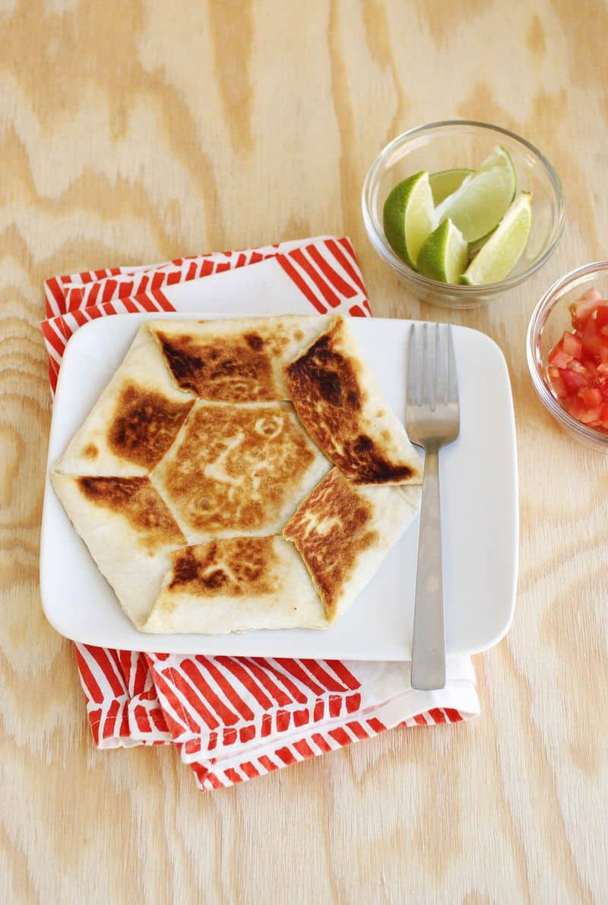

Crunchwrap Recipe

Description
A homemade vegetarian Crunchwrap recipe which is tastier and healthier and cheaper. Enjoy!
Ingredients
- tortilla
- Kidney beans
- Lettuce
- Cheese
- Pico de Gallo
- Guacomole
- Tostada
- Guacomole
- Optional: sour cream and salsa
Steps
- put kidney beans, cheese, pico de gallo, guacomole, lettuce, tostada on the tortilla
- wrap it from each side and encase it completely
- put on stove and warm up both sides until finished
- if you would like, in my opinion it tastes better with sour cream and salsa on the side whiile eating it